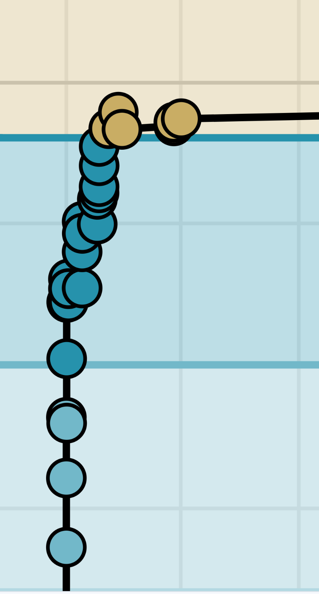
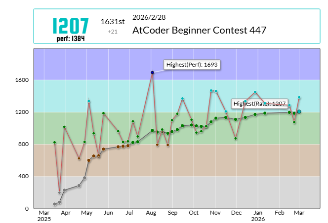
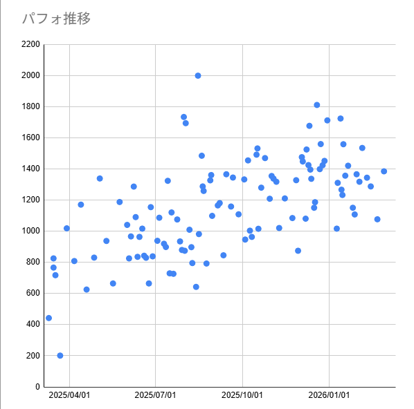
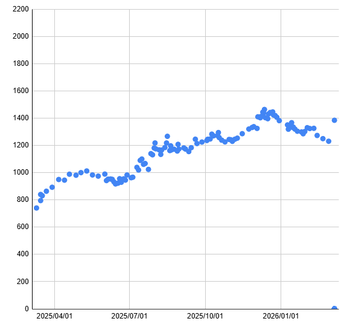
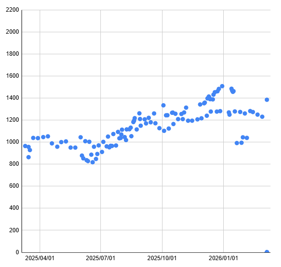
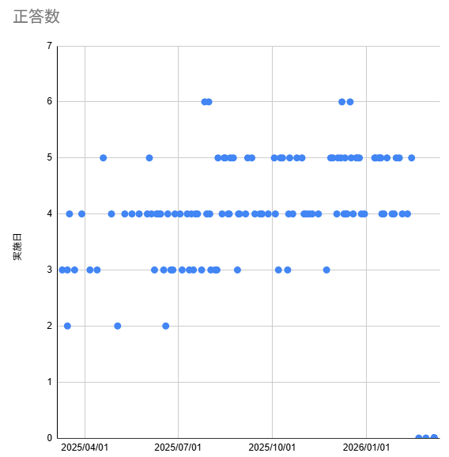
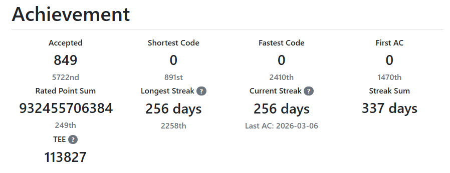
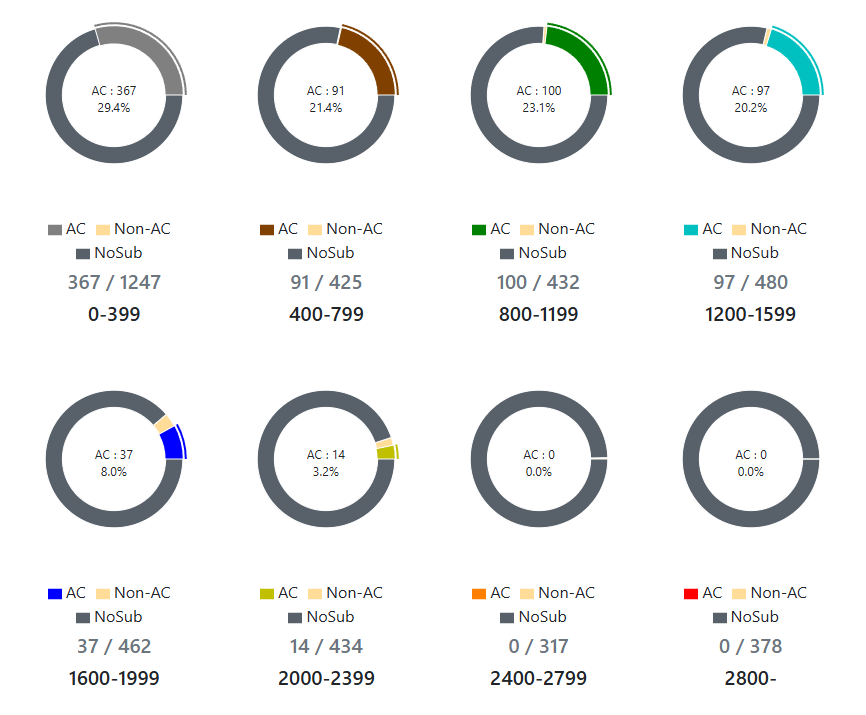

| 作成日 | 2026/03/08 |
| 最終更新日 | 2026/03/08 |
Atcderのレートが1200を超えついに水色になりました。せっかくなので色変記事として入水記事を書きます。
初コンテストから大体1年の節目なので振り返りにも丁度良い時期です。
この1年で何をやったかを振り返りながらまとめます。アルゴリズムの話はせずにふんわりした話をします。
初コンテストから1年で入水ですが、それ以前にプログラミングをやっていない訳ではありません。それを隠して1年で入水！！はズルですね。 事前知識を軽くまとめます

こんなところです。
もともと興味があり、大学の講義でプログラミングに触れたらそのままどっぷりハマりました。どっちかというとモノづくりプログラマです。再帰関数との出会いはぷよぷよの連結判定するために勉強したときでした。
上で触れてはいませんが実は競プロに挑戦していました。 今回、ほぼ1年みっちり勉強することに成功しましたが、実は過去に2回挫折しています。
1回目は3年以上前。2回目は2年前、そして今回が1年前からです。
やめた2回とも競プロ典型90問に触り、分かんなくってやめてます。
1回目は完全にプライベートでやったのでログはありません。配信用にatcoderのアカウントを作り直したので真相は完全に闇の中。偏角ソートを見て感動した覚えはあるので、9は触ってそうです。dreamとかeraseも読んだ覚えがあるのでABSもやってたと思います。
登録時期だけはわかり、2022/7月にARCのメールが届いてます。めっちゃ前から興味だけはあったようです。
2回目は2年前、これは配信に残ってます。6までやってやめてます。飽きるの早いですね。初見という体でやりました。ここで白状しておきますが最初の方は見たことありました、すみません。でも覚えてないから初見です()。
そして3回目、今回です。性懲りもなく典型90に再挑戦してます。しかも続きの7からです。ん～、無計画。 気分で生きてるからしょうがない。
偶に配信で競プロお勉強には何がいいかと聞かれて、競プロ典型90は難しいので分からない問題は飛ばして挫折しないようにすべき、やったことはないがNovistepがいいらしい、というのは経験から言ってました。
典型90は初心者が触るものではない。本当に。簡単な問題で気持ちよく勉強したほうが続けられてよい。
三度目の正直としてリベンジに成功して良かったです。二度あることは三度あるにならなくて良かった。
3回目の今回は勉強だけだと続かないと思ったので、ちゃんとコンテストに出ることにしました。それでも典型7を触ったのが2/11、初コンテストが3/15なので1ヶ月は勉強を始めてからコンテストに出てないです。勉強量もたいしたことがなく、3/14に触ってるのが典型22・23なので1ヶ月で15問しかやってないです。まだまだやる気はなさそうです。それでも直前にバチャは2本やってます。
本題に入って執筆時点のレート推移は以下の通りです。

偶にコケてますが、順調に右肩上がりと言っていいと思います。 初コンテストで緑パフォ。まぁ半年くらいで水色になれるだろと思ってました。現実は甘くない。
青パフォが出た時なんてもう入水秒読みだと思ってました。運よく6完青パフォが出ただけでした。ラッキーで6完なんか取れてたまるかと思いましたが。ラッキーで取れました。お祈りで出したコードが通っただけだからね。(問題 / 提出コード)
10^6乗以下のＸが5×10^5乗個来ると負けます。
早期判断なんてヒューリスティックみたいなことしてます。 アルゴリズムでヒューリスティックするな、ヒューリスティックでアルゴリズムするぞ。……ヒューリスティックにアルゴリズムは必要です。何も問題なかった。(ABC448で見た目がヒューリスティックの問題が出ました、タイムリー過ぎる(問題))
閑話休題
さて、ここまではAtCoderのマイページからわかることですが、それ以外にもスプレッドシートにデータをまとめてます。

こちらはバーチャルを含む参加したコンテストのパフォーマンスの推移です。拡張機能にはお世話になってます。
このまま生のデータでもなんとなく右肩上がりなことがわかりますが、それぞれ後方5回との平均をとってみましょう。 平滑化したグラフが次の通りです。

少し停滞があるものの、右肩上がりなことがわかりやすくなります。
平均を取ると1400くらいのレートになっててもおかしく無さそうなのに、今のレートは1200しかないですね。なんか悔しいので、調べてみましょう。
にわかにシートの並び順を日付順からコンテストの昇順にして平均をとってみます。

このグラフは少しややこしくなっています。4/1にABC401を走ってたとすると、4/1にABC401〜405の平均パフォーマンスがプロットされています。
10/1にABC350のバチャを走っていたらABC350〜ABC354の平均が取られ、10/2にABC430をやっても10/1の値に影響はありません。日付ベースのプロットですが、データはコンテストごとに平滑化されてます。 このグラフを見ると明らかに2つの高さの分布があります。
これは昔のABCと現代ABCでのパフォの差になります。バチャを遡っていくと自分だけ強くなって、周りは逆に弱くなっていくので現代ABCとのパフォの乖離が出てきます。思ってたよりしっかり出てきたのでデータとして共有します。最近の場所で約100回分の差なので大体2年分ですね。1年につき100の実力インフレというのも納得です。
1月以降のパフォが低いのはバチャをやってないからです。
ついでに完数のグラフです。

4完以上が安定してきたことがわかります。わかるのはそれくらいです。もう少し6完したいです。
頑張って情報を読むのであれば、5年前のE869120さんの記事では、水色に求められることは8割4完と言われてますが、現代では足りなさそうだということくらいでしょうか。
実力インフレによる、レートデフレがつらい人が多そうです。現状維持はレート低下に直結してしまいます。こないだ内部レートの調整が入ったので緩和されることに期待です。
ここまでの内容で概ね伝わりそうですが、最初に典型90問をやって、その後最新のABCのバチャから昔に向かって走り続けました。
手が出ない問題より時間が足りないことが増えてきた気がするので、2026年の明け以降はおすすめされたADTに手を出し、早解きの練習をしました。まだ数回しかやってないので効果はまだ分かりません。AC出来ずに逃げていた問題と戦うというのもやりました。
最近はAWCがあるのでこれを消化してます。新しいソシャゲのスタートダッシュは頑張るけど、途中でログインすらしなくなる現象みたいにならないことを祈ります。
典型90は全て触りました。ABCもなるべくさわれそうな問題は触っておくことにしていて、Fまでは基本触ってます。Gは偶にあるdiffが低いものだけ触ります。逆にFはdiffが橙のものは触ってません。黄色までは触ることにしています。何かの間違いで解けるかもしれないのでね。
基本はバチャを走った日はバチャだけ、大分考えても解けなかった問題はそのまま解説を見て、全然考えてない問題は別日に取り組みました。1時間くらい戦って何も分からなければ解説を見ていました。
典型90はもう少し早めに解説を見ていたような気もします。知らないものは考えても出るわけがないですね。
上でも書きましたが、わからない問題と戦い続けて嫌になるくらいなら戦うのをやめた方がよいです。趣味なんて楽しい範囲が一番。
典型90が終わったのが5月末頃で、以降はバチャをやってます。遡るバチャの最初が6/10で391、 最後が1/17の339なので半年で50個くらいです。
平均週2,3のペースです。時間内に解ける問題も増えるので、後半のほうが消費速度は早いです。連続で6完したときはびっくりしました。
この他に最近のABCもやってるので1年で100コンテスト解いてます。大分負荷は高めだと思います。
ABC100コンテストでFまで触るとだいたい600問、大分見当がつかない問題も減ってきました。
それでもTSPの実装をしたことがなかったりMo'sを通ってなかったりしました。AWC、ADTも有用だと思います。
他にも長期ヒューリスティックもやったりして手を止めてる期間もあるのでアルゴの勉強に割けた時間の実効濃度でいうともう少し上がります。
現時点でのAtcderProblemsでのACは800ちょい、DifficultyPieはこんな感じです。灰色が気持ち多いのはストリーク伸ばしに001から前向きに進めてる問題もあるからです。


最近は解説ACをしないようになりました。忘れた頃にもう一回解いた方がお得だと思っています。解説ACした問題を全然覚えてないことがあったのであまり良くないと思い埋めなくなりました。この方針が良いかどうかは分かりません。
あとは勉強というかは怪しいですが、問題のタグ付けはしていました。最近さぼってますが……。(これ)
類題をパッとだせると良さそうなので。問題の覚え方は人によって違うのでいい感じに単語検索できるように更新していきたいですね。
以上、プログラミング歴とここ1年の勉強内容をまとめてみました。ある程度のプログラミング好きでも割と真面目にやって1年かかるということで改めて入水の壁の高さを感じました。これでもまだ上位8%とかですから上の世界は末恐ろしいですね。
今後の目標はとりあえずABCにで続けながら無印のARCにで続けることです。……つまり水色キープということですね。幸いなことに緑色でも参加できるARCを作っていただけたのでARC自体には出れそうですが、折角なので無印も出たいよね。
アルゴリズムで青を目指すのは……、半年前なら目指すと言ってたかもしれませんが、今は厳しいと思ってます。あと5〜15分どこかでまくれれば完数が1増えるラインにはいますが、それが出来ても水色中位です。
あんまり青パフォを取り続けるビジョンは見えてこないです。あまり高い目標はモチベ維持によろしくないのでほどほどにしておきます。なんならヒューリスティックを頑張りたい。
さて末筆とはなりますが、普段勉強配信で知見を共有くださる方々、大変ありがとうございます。1人ではなかなか気づけない観点の情報が多くとても助かっております。この場を借りてお礼申し上げます。
書きたいことはあらかた書いたような気がするので、今回はこの辺で終わります。
ではまた。